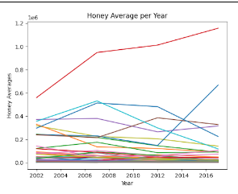
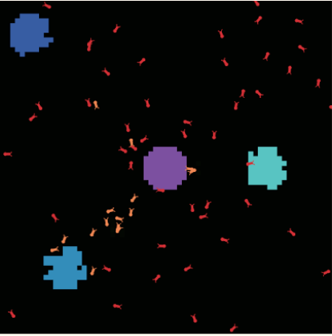
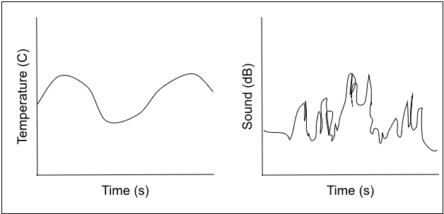
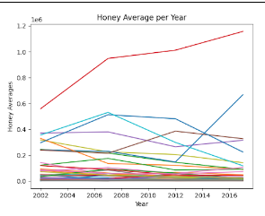
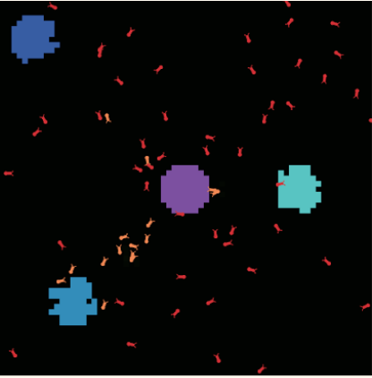
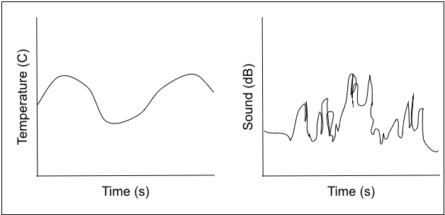
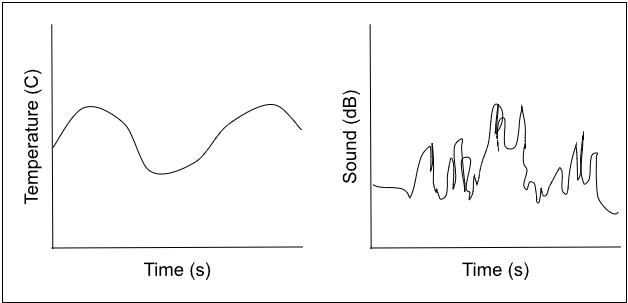

This is my Amazing Portfolio Page!

This is a game where you choose how you want to build a snowman. The program asks you a series of questions about how you want your snowman to look. At the end, it displays your snowman just you wanted it.

This is a game where you solve a math equation and it sends the alien off into space. It is called space invaders. Once you are done, if you get a high score, You will get on the leaderboard

This is our scratch game where you fly the dinosaur through the pipes and if you touch a pipe, your score resets to 0. Once you get to a high enough score, the background changes.

This is our 3.2.4 Graph that shows the amount of production of honey per year so we could analyze different trends and patters to see different kinds of growth in different areas.

This is a picture of the ant simulation we made. Our simulation allowed us to alter different variables, and we also looked for ways to better improve the simulation. We then made a slideshow to show what we found.

This is a graph where we anaylyzed temperature, sounds, and color from different places. He then concluded that the rover, which was giving us data, was located in the Rocky Mountains!

This is our 3.2.4 Graph that shows the amount of production of honey per year so we could analyze different trends and patters to see different kinds of growth in different areas.

This is a picture of the ant simulation we made. Our simulation allowed us to alter different variables, and we also looked for ways to better improve the simulation. We then made a slideshow to show what we found.

This is a graph where we anaylyzed temperature, sounds, and color from different places. He then concluded that the rover, which was giving us data, was located in the Rocky Mountains!
